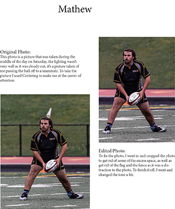

Mathew Lopez Digital Photography |
||
| Home Print Project Digital Photography Video Project Infographic Project | ||
|

Click to view full project here. |
Towards the beginning of AENG 110, our professor had us do this Digital Photography project, that in my mind, was cool. We had to take multiple photos. Some were outside and others were inside. I had a little fun with this project where I got to be able to use some photos, I was able to take during my Rugby season. Overall, these photos were some of the best pictures I have taken in my opinion. After we took the photos, we got to edit the photos and make them look what we got to think of as better then the original with the use of photoshop. |
Home Print Project Digital Photography Video Project Infographic Project |
©2024 Mathew Lopez | ||